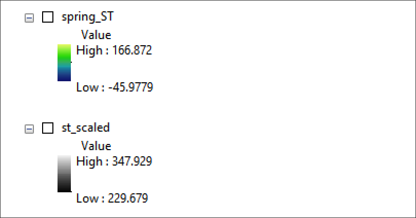

Assignment Preamble
This week’s assignment will encompass the following concepts covered in Class 10 remote sensing (RS) lecture & lab.
In this RS assignment, you will first access and download Landsat ARD data for an urban area of your choice (Area of Interest - AOI). Once complete, you will create a Surface Temperature product to gauge potential urban heat island effect, coupled with a spectral index for NDVI - Normalized Difference Vegetation Index. When compared side by side, spatial patterns consistent across both raster surfaces should be evident.
The assignment features several sections as follows:
- Landsat Analysis Ready Data (ARD) Program
- Surface Reflectance and Temperature Surface products
- Band Combinations
- Spectral Indices
In the era of climate change, there has been significant research into the earth’s surface temperature, especially in urban areas where socio-economic, landcover, historical urban design all strongly correlate with increasing surface temperatures - often referred to as Urban Heat Islands.
Through a socio-economic lens, income is often correlated with vegetative cover in urban areas:
Through a historical urban design lens, what is referred to as ‘red lining’ also often correlates with less vegetative cover:
Particularly relevant for this assignment, rising surface temperatures are closely spatially correlated with landcover - all of which can be measured with a fair amount of precision at the municipal level via the Landsat program:
Satellites Pinpoint Drivers of Urban Heat Islands in the Northeast
Widespread Race and Class Disparities in Surface Urban Heat Extremes Across the United States
Various heat-producing surfaces can be found in the urban environment and categorized into landcover types. This research can be helpful in interpreting the results of remote sensing for both surface temperature and landcover:
Data

Note: The
C10 Data Pacakgefeatures the ARD grid utilized early in the assignment to determine the horizontal and vertical position of the assignment AOI. Once done, two empty folders are provided for the surface temperature data (ARD_ST) and the surface reflectance data (ARD_SR). When accessing data at EarthExplorer, the results can be placed in the ARD_ST and ARD_SR folders, respectively, to keep assignment organization.
Assignment Step 1
To Start, this assignment will rely on both the general process and sample imagery found in this week’s Demonstration Data for Springfield, MO. Here the city of Springfield, MO is the AOI; the imagery date is the height of summer on June 20th, 2021 at approximately 10:50 am (more on how to determine time of the imagery later in the assignment).
For your own assignment, you will pick a US city as your AOI. Good picks are cities that are mid-sized to large. They must first meet the following criteria:
- The AOI must fully fit within one ARD grid tile.
- Within the ARD grid tile, the city must be covered by just 1 Landsat ARD scene.
The Springfield, MO AOI meets both criteria as seen below:
- Search for a city that falls within one ARD grid tile. Once found, select the grid tile and notate the
handvvalues in the attribute table for the grid tile. In the case of the grid tile containing Springfield, MO, thehvalue is18and thevvalue is11.

Next, Navigate to EarthExplorer, making sure you are logged in as a user. Under Search Criteria, Navigate to the Landsat ARD tab for Collection 2 data:
Utilize the horizontal and vertical position of the ARD Grid to produce results just for that one grid space.
The AOI is Springfield, Missouri which has a Horizontal ID of
18, and Vertical ID of11:
Next, the following four conditions are met from the returned results:
Cloud-free over Area of Interest - AOI - Springfield, Missouri as example.
The tile preview shows full continuous pixel coverage over AOI.
The ARD tile date is within ‘the growing season’, i.e. approximately late May through early August. Ideally, the ARD tile date is also in ‘high summer’ so that the surface temperature values will represent a typical hot day at the AOI.
The ARD scene is part of the Landsat 8 Program, and the ARD scene is part of the Collection 2 segment of the program.
The Download features two products - the Surface Reflectance Values; and secondly the Surface Temperature values. Make sure to download both bundles, untar them with keka or 7zip and place the uncompressed files into the ARD_SR and ARD_ST, respectively:
Uncompress the download bundles into the assignment directory:

Assignment Step 2
Verify Landsat 8 ARD Imagery Date, Time, Azimuth and Elevation
As we discussed in Lecture 11, the Landsat program instrument is a passive sensor which requires the sun to effectively record electromagnetic values. As Landsat 8 traverses the continental US, it travels in a north>south direction, and it passes the equator heading southward mid-morning. As a result, the Landsat sensor should pass over a city in the continental US in the earlier part of the day. We can check the exact time that a Landsat scene is recorded, and we can also find the sun’s elevation and azimuth. The following graphic shows both elevation and azimuth where 0° elevation is at sunrise and 90° elevation when the sun is directly overhead:
Landsat data acquisition times are expressed in Greenwich Mean Time (GMT), and can be converted to CST, PST and EST. Since Springfield, MO is CST, we subtract 6 hours from the GMT expression in the metadata:
CST = -6 GMT
PST = -8 GMT
EST = -5 GMTWe can also find the weather of a certain day for a certain city:
For Springfield, MO on the data of imagery acquistion (6-20-21) the temperature profile is as follows (hot by 10am!):
To Find the Date, Time, Elevation and Azimuth, access the .json file located in either the ARD_ST folder:
.json metadata file for ARD tile sceneThis file can be opened in a text editor. Once open, look for the section titled “SCENE_METADATA”:
From this information, we can place the assignment example for Springfield, MO as follows:
- The image is taken on 6/20/21 at 10:48 AM.
- The Sun’s Elevation is relatively ‘high in the sky’ at 67 degrees.
- The Sun’s position is in the south-eastern sky with a Azimuth of 121 degrees.
In effect, if we were standing facing south in Springfield, MO when this Landsat scene was recorded it would have been a hot morning approach 90 degrees; the sun would have been relatively high in the sky approaching a typical ‘noon’ position at 90 degrees; and the sun’s east>west orientation would be southeast in the sky. Indeed, these conditions are pretty good to represent a typical ‘early, hot summer day’ in the midwest of the US in the city of Springfield, MO. This is the condition that we are seeking for our surface temperature analysis upcoming in the assignment. It is also appropriate for the vegetative cover analysis where we would expect the tree coverage to represent a ‘full-leaf’ summer day.
Once the metadata has been checked for appropriateness of imagery to the analysis task, you can proceed with confidence that your Landsat imagery is portraying the date,time, ambient temperature and sun position that we seek: a typical warm to hot summer day with typical, full sun exposure.
Assignment Step 3
Processing the Imagery for NDVI
Import the Band 4 and Band 5 Surface Reflectance values into the TOC:
To Start, the NDVI spectral index will be created based on the following formula:
NDVI = (NIR Band - Red Band / (NIR Band + Red Band)As translated to the Landsat 8 band numbers:
NDVI = (Band 5 – Band 4) / (Band 5 + Band 4)The following formula utilizes the SR values in Band 4 and Band 5 located in the ARD_SR folder:
Float("LC08_CU_018011_20210620_20210703_02_SR_B5.TIF"-"LC08_CU_018011_20210620_20210703_02_SR_B4.TIF")/("LC08_CU_018011_20210620_20210703_02_SR_B5.TIF"+"LC08_CU_018011_20210620_20210703_02_SR_B4.TIF")
The above equation layer names are particular to the demonstration data; your layer names will be different; populate equations accordingly for your assignment NDVI and Surface Temperature calculations. Also note at the front of the equation is the function Float; what this does is take the integer values of the bands 4 and 5 and allows for a output of Float values, not integer values.
Review the results with symbolization applied for values within the new NDVI Index:
Save the results as your_city_name_NDVI.tif into the outputs folder. You can also save the .mxd project into the assignment folder before proceeding to the next steps.
Assignment Step 4
Processing the Imagery for Surface Temperature
With NDVI complete, turn to calculating the Surface Temperature utilizing the ST layer in the ARD_ST folder. Import this band layer into the .mxd project:

ST_B10 LayerST_B10 Layer loaded to Layers TOC PanelBased on the metadata/product guide, the thematic of this raster layer is as follows:
Surface Temperature (ST) – Represents the temperature of the Earth’s surface in Kelvin (K).
Also noted in the guide is a scale factor that is utilized for the product:
ST bandApplication of Scale and Offset:
- More information on Scaling USGS Landsat Level 2 FAQ
Here the digital numbers need to be scaled accordingly, and an offset of 149 is also applied. If the value is to be expressed in Celcius or Fahrenheit, a further conversion needs to take place via the raster calculator. This will be accomplished in two steps:
Scale the raster values in Raster Calculator.
Apply a temperature conversion where
Kis the scaled raster values andFis the Fahrenheit temperature measurement:
F = 1.8(K - 273) + 32Next, apply the temperature conversion based on the formula for kelvin to fahrenheit units, and output as your_city_name_ST in the typical, default GeoTiff format:
1.8 * ("st_scaled@1" - 273) + 32Review the resulting raster values, original Kelvin vs new Fahrenheit:

Finally, apply an appropriate color ramp with the city focused in the canvas extent to ensure the surface temperature pattern appears correct where high values are located generally over impervious, high built-up areas; lower values in more suburban and rural areas, often towards the outer edges of cities:
Assignment Step 4
Mask Analysis Layers to a Common AOI Extent
At this juncture, both the NDVI and Surface Temperature Analysis Rasters have been created; but their extent is simply the extent of the original Landsat tile edge. As the goal of the assignment is to compare and evaluate the vegetative cover within the respective urban AOI relative to surface temperature, ‘cutting’, i.e. masking to the city AOI is valuable. To do so, we will query OpenStreetMap for the ID of the respective city; acquire this ID in Overpass Turbo and utilize it as polygon mask in QGIS. We’ve done this type of query in the Class 6 Technical Lab.
To Start, navigate to OpenStreetMap, and search for the city by name:
Next, record the ID; in the case of Springfield, MO, this is a Relation geometry:
Navigate to Overpass Turbo and enter the query code for the Feature ID (replace your city ID with that of Springfield, MO in the example):
/*
This query looks for a node, way or relation
with the given id.
*/
[out:json][timeout:25];
// gather results
(
// query part for: “id:141244”
relation(141244);
);
// print results
out body;
>;
out skel qt;Download the result as GeoJSON and place into the outputs folder.
Next, Utilize mapshaper as was done for Class 6 Technical Lab to transform the city extent polygon to .shp format (shown as export2.shp below):
Next, mask both the NDVI and Surface Temperature rasters and save them to the outputs folder as NDVI_final.tif and ST_final.tif, respectively:
Before Proceeding to the final cartographic design, check the two results; they should be both clipped to the city boundary located at OpenStreetMap:
Map layout & Deliverable:
With both Raster Layers Prepared, save the .mxd project before proceeding. The map layout will feature a side-by-side comparison of the NDVI results to the Surface Temperature results. A Gradient Color Ramp will be provided for each raster theme; both will be displayed with the same map scale, so 1 scale bar can apply to both map layout frames.
To Start, create a Gradient Color Ramp for the NDVI Spectral Index and Surface Temperature Gradient using the following short video as guide:
Make sure to apply a pseudocolor color ramp for the legend development.
With the pseudocolor color ramps applied to each layer, proceed to Map Layout and position both layers into a horizontal, landscape orientation:
Next lay in the two analysis layers, and apply a continuous gradient legend to each. Make sure to retain the exact same map scale for each map frame.
Use the following assignment draft as a general template for your map layout:
In the layout example provided, both legends are oriented with low values at top, high values at bottom. There’s a strong argument to flip these legends so they correspond better. Low NDVI values correspond with high surface temperatures; it would be appropriate and logical to flip the surface temperature legend so that its high values are on top and correspond with the low NDVI values at top of the respective NDVI legend.
A PDF of the map layout template is located as Class 9 Assignment Template:
The final map design should include the following:
Landscape orientation map sheet.
Graduated symbology legend for both NDVI and Surface Temperature raster surfaces.
Titling that explains the location, date range and thematic purpose of the mapping.
Source the data as follows: Landsat-8 analysis imagery courtesy of the U.S. Geological Survey.